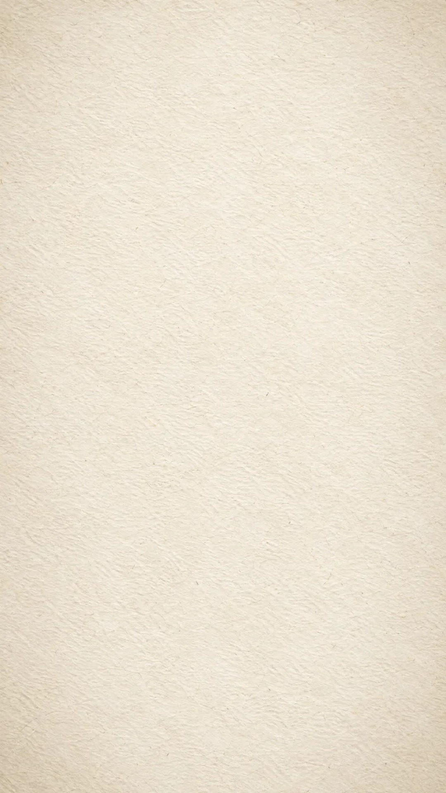
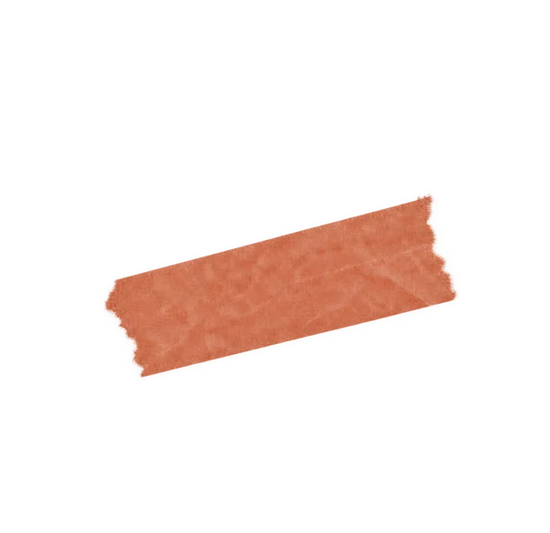
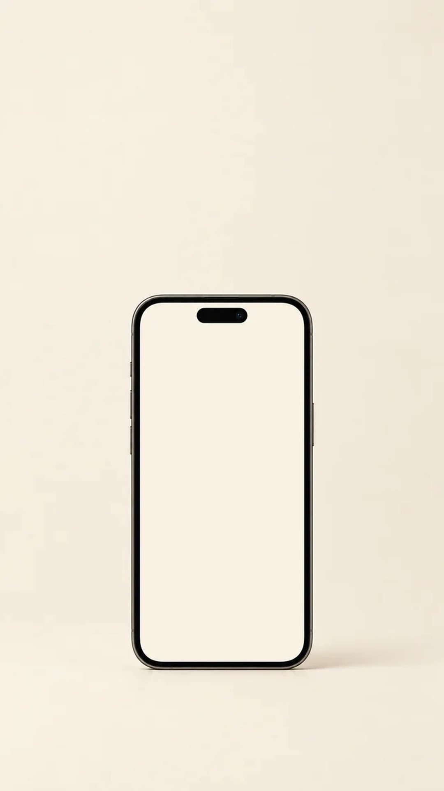

Os adjetivos mudam.
A lógica é a mesma.

a leitura que acusa
manipuladora
exagerada
faz de propósito
a leitura que explica
o que aconteceu antes?
o que ela sentiu?
o que dá pra fazer depois?
Entender não tira a responsabilidade.
Tira do lugar errado.

Quem sofre
não escolhe
como gritar
DR. FABIO SCHMIDT
Explicar não é passar pano.
Dr. Fabio Schmidt, médico, CRM-SP 183549. Conteúdo educativo.

e-book
160 páginas
Ver o que tem dentro